Eastern Air Lines Flight 401 (1972)
Aircraft: Lockheed L-1011-385-1 TriStar
Airline: Eastern Air Lines
Date: December 29, 1972
Route: New York (JFK) → Miami
Passengers: 163 | Crew: 13 | Fatalities: 101 | Survivors: 75
This flight crashed into the Florida Everglades while on final approach to Miami. The flight crew became distracted by a malfunctioning landing gear indicator light, and the autopilot was inadvertently disengaged. The aircraft gradually descended without anyone noticing until it impacted the swamp.
Survivor Accounts: Many survivors described the moment of impact like a “roller coaster,” with bodies thrown against seats and debris. Surviving flight attendants helped others escape.
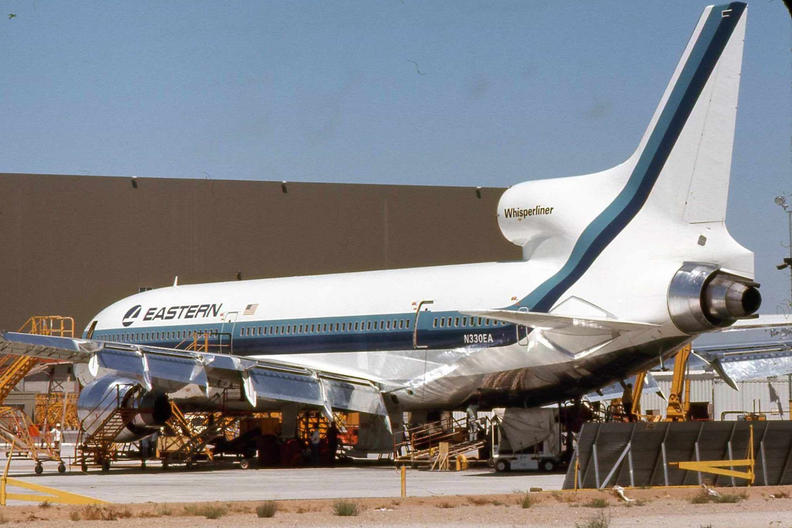
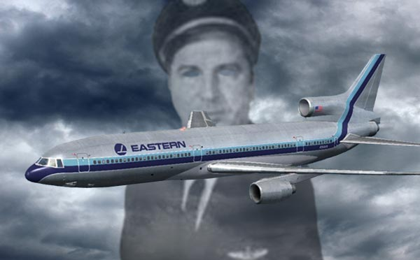
Learn more: Eastern Air Lines Flight 401 — Wikipedia
Malaysia Airlines Flight MH370 (2014)
Aircraft: Boeing 777-200ER
Airline: Malaysia Airlines
Date: March 8, 2014
Passengers and Crew: 239 | Fatalities: 239 | Survivors: 0
This flight vanished from radar during a flight from Kuala Lumpur to Beijing. After its last communication, it turned off course and disappeared over the South China Sea. Extensive search operations spanning thousands of square miles of ocean found some debris but not the main wreckage.
Mystery Details: No distress call was sent, and investigators have never pinpointed what caused the disappearance. Theories range from systems failure to human interference, but the mystery remains unresolved.
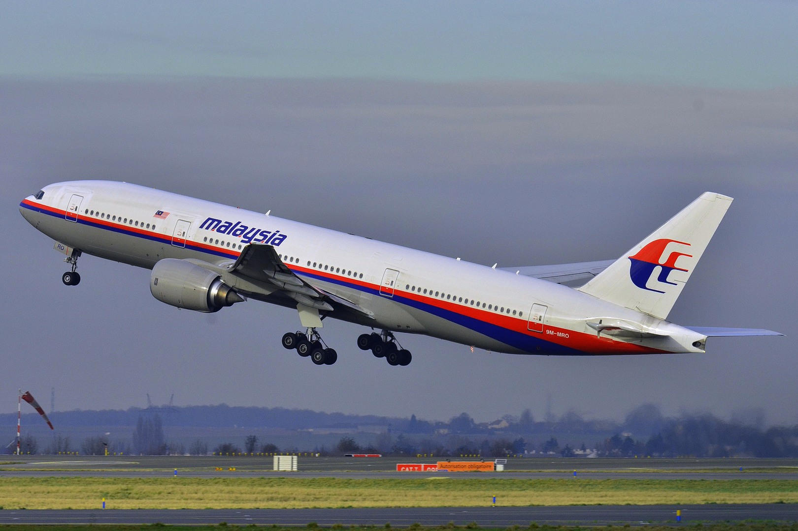

Learn more: Malaysia Airlines Flight 370 — Wikipedia
Flight 19 – The Bermuda Triangle Disappearance (1945)
Aircraft: Group of five TBM Avenger torpedo bombers
Operator: United States Navy
Date: December 5, 1945
Crew: 14 | Survivors: 0 | Missing: 14
Flight 19 was a training mission that disappeared over the Atlantic Ocean after losing radio contact. All 14 aviators vanished without a trace, contributing to the legend of the Bermuda Triangle. A search aircraft sent to look for them also disappeared, adding to the mystery.
Mystery Details: Lost compasses and navigation confusion were cited, but no wreckage or remains were found.
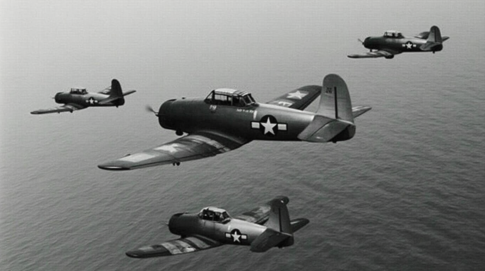
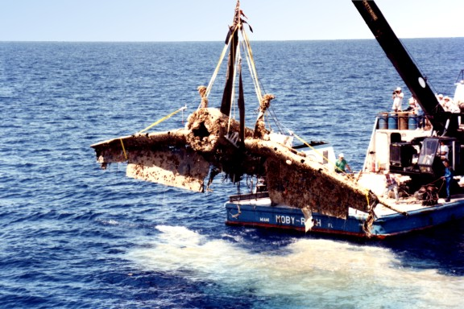
Learn more: Flight 19 — Wikipedia
Japan Air Lines Cargo Flight 1628 UFO Incident (1986)
Aircraft: Boeing 747-200F
Airline: JAL Cargo
Date: November 17, 1986
Crew: 3 | Survivors: 3 | Fatalities: 0
While flying over Alaska, the pilot reported seeing unidentified objects — described as “two small ships and a mothership” — alongside the aircraft. Radar controllers in Anchorage noticed an object close to the flight for several minutes.
Investigation Notes: Later analysis suggested the pilot may have misidentified bright planets or stars, and radar signatures dismissed as clutter. Many experts believe it was a misinterpretation, but it remains a famous aviation sighting.
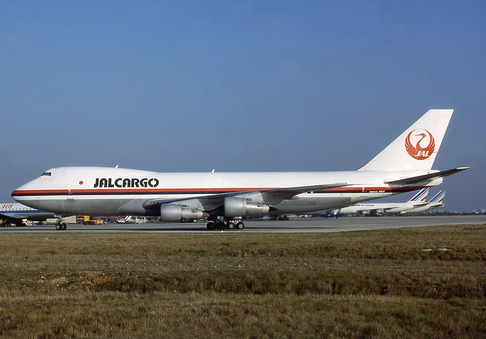
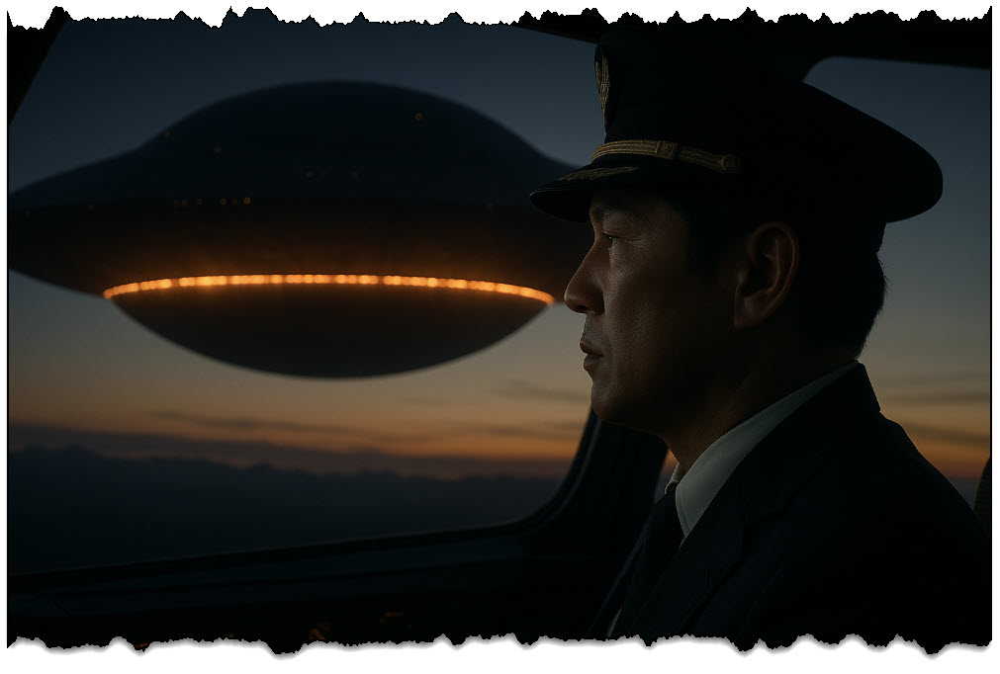
Learn more: JAL Cargo Flight 1628 — Wikipedia
Air France Flight 4590 – Concorde Crash (2000)
Aircraft: Aérospatiale-BAC Concorde 101
Airline: Air France
Date: July 25, 2000
Passengers: 100 | Crew: 9 | Fatalities: 109 onboard + 4 on ground | Survivors: 0
This flight crashed shortly after takeoff from Paris Charles de Gaulle Airport. A piece of metal on the runway caused a tyre to burst and rupture a fuel tank under the wing, leading to a fire and loss of thrust. The Concorde crashed into a hotel in Gonesse, killing all on board and four people on the ground.
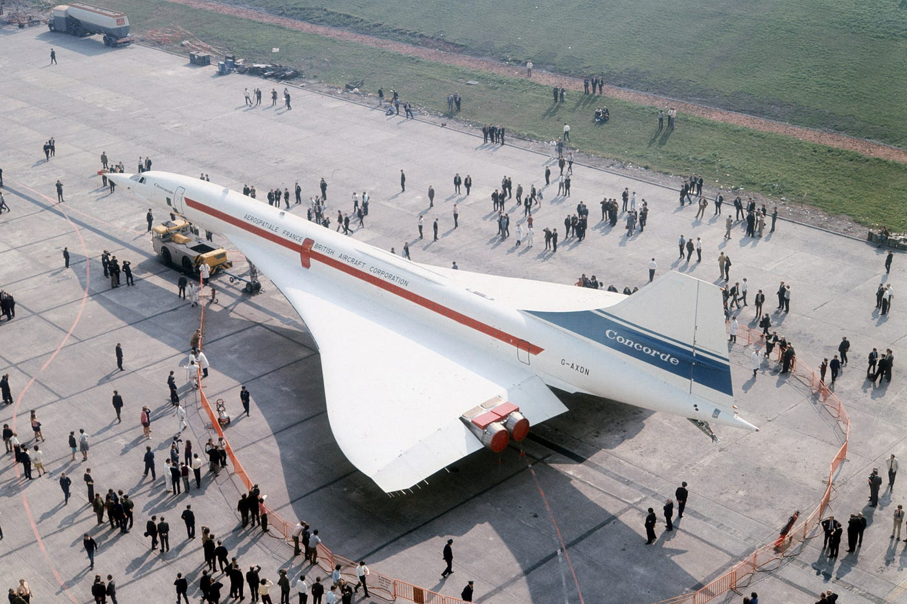
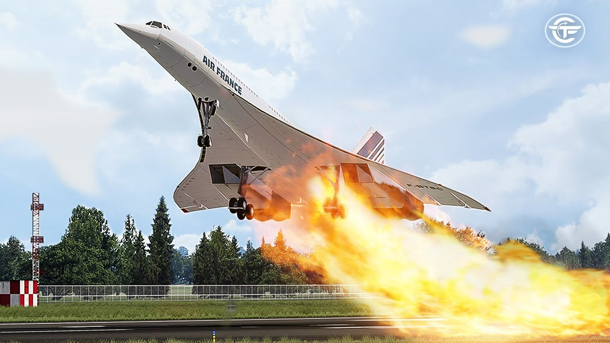
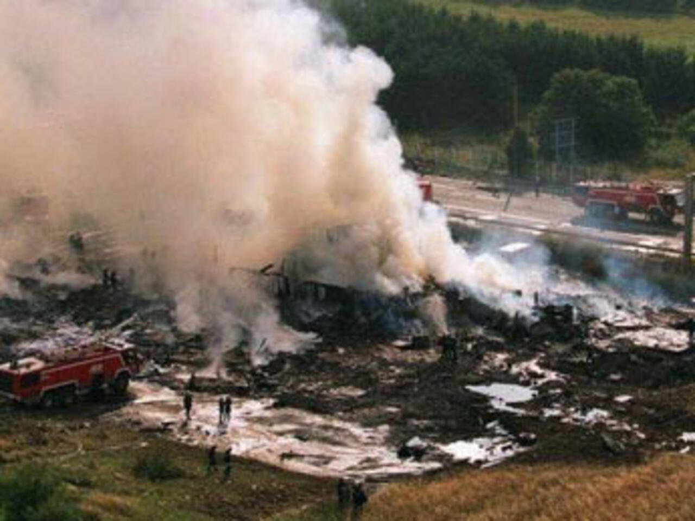
Learn more: Air France Flight 4590 — Wikipedia
Qantas Flight 72 – Uncommanded Pitch Down (2008)
Aircraft: Airbus A330-303
Airline: Qantas Airways
Date: October 7, 2008
Passengers: 303 | Crew: 12 | Fatalities: 0 | Injuries: 119
While cruising at 37,000 feet over the Indian Ocean, the aircraft suffered two unexpected pitch-down manoeuvres due to faulty sensor data. Although the plane remained intact and landed safely in Australia, many passengers and crew were severely injured by the abrupt movements.
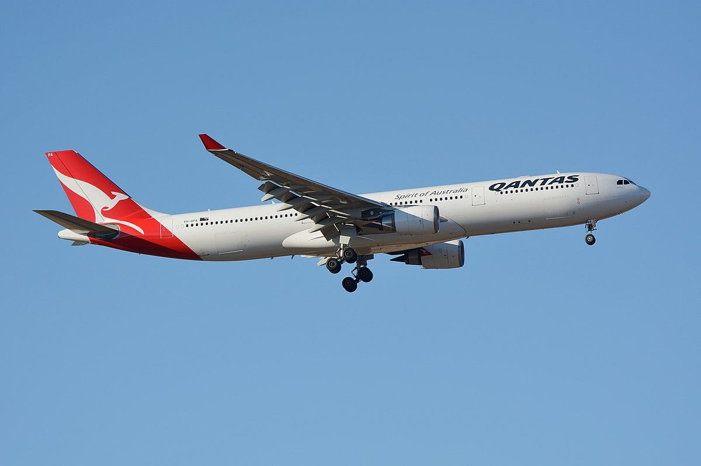
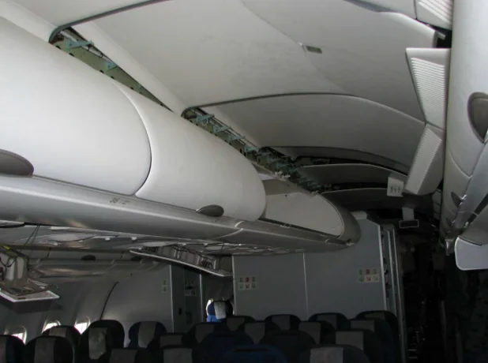
Learn more: Qantas Flight 72 — Wikipedia
Reveal a Mystery Fact!
Click the button to uncover a mysterious aviation fact: